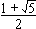

Solution to puzzle 99: Two similar triangles
Two similar triangles with integral sides have two of their sides the same. If the third sides differ by 20141, find all of the sides.
Suppose the smaller triangle has sides (a, b, c), where a  b
b  c.
c.
Then the larger triangle has sides (ka, kb, kc), where ka  kb
kb  kc, and k > 1 is a (rational) scale factor.
kc, and k > 1 is a (rational) scale factor.
Clearly a < ka and kc > c, and so neither a nor kc may be a common side.
Hence the common sides must b = ka and c = kb = k2a.
That is, the smaller triangle has sides (a, ka, k2a); the larger triangle has sides (ka, k2a, k3a).
Let k = n/m, a fraction in its lowest terms.
Consider the longest side, k3a = an3/m3.
Since n/m is a fraction in its lowest terms, either m = 1, or (if m > 1) m3 does not divide n3.
In either case, m3 must divide a.
Letting a = pm3, where p is an integer, the sides take the form (pm3, pm2n, pmn2) and (pm2n, pmn2, pn3).
The difference between the two non-common sides is 20141.
Hence pn3 - pm3 = p(n - m)(n2 + nm + m2) = 20141.
The prime factorization of 20141 is 11 × 1831.
By the Fundamental Theorem of Arithmetic, the above prime factorization is unique, and therefore each of p, (n - m), (n2 + nm + m2) must take one of the values 1, 11, 1831, or 20141.
Consider the four cases: n - m = 1, 11, 1831, or 20141.
Cases n - m = 1831 and n - m = 20141
We may rule out these two cases, for then n > 1831, and so n2 + nm + m2 > 11, in which case (n - m)(n2 + nm + m2) > 20141.
Case n - m = 1
Consider next n - m = 1.
Then n2 + nm + m2 = (m + 1)2 + m(m + 1) + m2 = 3m2 + 3m + 1.
By inspection, 3m2 + 3m + 1 = 11 and 3m2 + 3m + 1 = 1 have no solution in positive integers.
Now consider 3m2 + 3m + 1 = 1831.
Simplifying, we obtain m2 + m - 610 = 0.
The discriminant of the quadratic expression is not a perfect square; hence the roots of the equation are irrational.
Similarly, if we consider 3m2 + 3m + 1 = 20141, we find that the roots are irrational.
Case n - m = 11
Finally consider n - m = 11.
Then n2 + nm + m2 = (m + 11)2 + m(m + 11) + m2 = 3m2 + 33m + 121.
Clearly, 3m2 + 33m + 121 = 11 and 3m2 + 33m + 121 = 1 have no solution in positive integers.
Now consider 3m2 + 33m + 121 = 1831.
Simplifying, we obtain m2 + 11m - 570 = 0.
Hence m = (-11 ±  2401)/2, yielding m = 19 as the only positive root. Then n = 30.
2401)/2, yielding m = 19 as the only positive root. Then n = 30.
Therefore (n - m)(n2 + nm + m2) = 11 × 1831 = 20141, and so p = 1.
It follows that the only candidate pair of triangle sides which can satisfy the similarity criterion is (6859, 10830, 17100) and (10830, 17100, 27000).
We now note that both sets of sides satisfy the triangle inequality -- that the sum of any two sides is greater than the third.
We conclude that the triangle sides are (6859, 10830, 17100) and (10830, 17100, 27000).
Remark
It is not difficult to show that, in order to satisfy the triangle inequality, the common ratio between the sides, k = n/m, must be less than 
Source: Inspired by Very Similar Triangles, in Mathematical Bafflers, edited by Angela Dunn